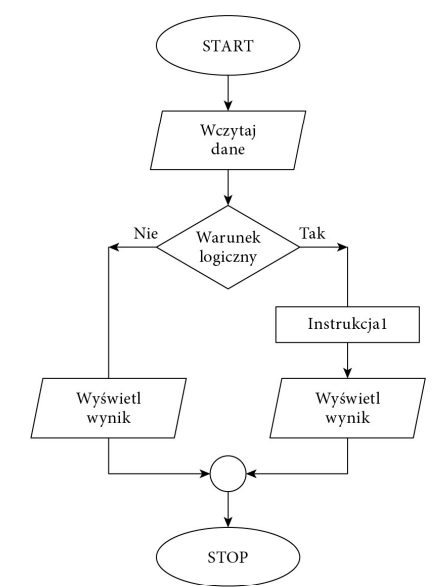
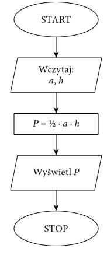
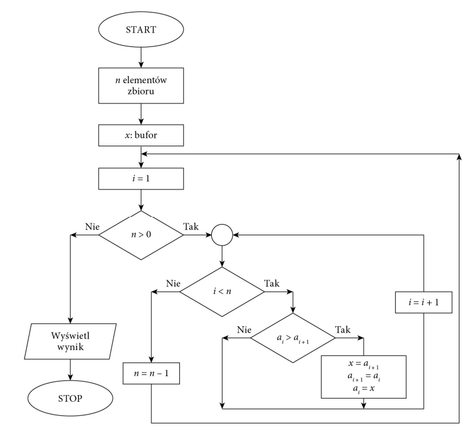
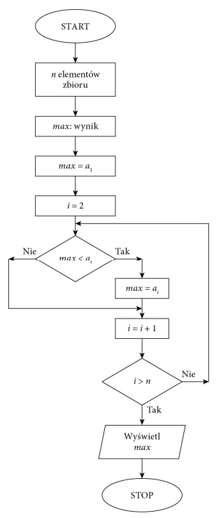

Algorytm to zestaw ściśle określonych czynności prowadzących do wykonania pewnego zadania. Określa sposób rozwiązania problemu i ma zastosowanie w różnych dziedzinach. Języki programowania to narzędzia, które bardzo dobrze nadają się do zapisu algorytmów. Aby napisać dobry program komputerowy, należy opracować skuteczny algorytm i zdefiniować dla niego odpowiednie struktury danych.
Algorytm przetwarzania danych powinien przy takim samym zbiorze danych wejściowych zwracać zawsze taki sam wynik. Ale stanie się tak tylko w dokładnie takich samych warunkach i przy tych samych danych pomocniczych. Zwykle przy projektowaniu algorytmu zakłada się, że dane wejściowe są poprawne, ale bywają algorytmy, które nie tylko przetwarzają dane, lecz również je weryfikują. W rzeczywistości tak jak nie każdy problem można rozwiązać, tak nie każdą metodę rozwiązania problemu można zapisać przy użyciu algorytmu. Aby problem mógł być rozwiązany za pomocą komputera, musi zostać zapisany w postaci algorytmu. Wynika to z tego, że komputer potrafi rozwiązywać tylko problemy, dla których rozwiązanie zostanie zdefiniowane w postaci jednoznacznych kroków, czyli algorytmu. Jeżeli nie można zdefiniować rozwiązania w postaci algorytmu, nie ma możliwości rozwiązania go z wykorzystaniem komputera. Zdefiniowany algorytm może zostać zapisany w wybranym języku programowania. Ale ten sam algorytm może zostać zapisany różnie w zależności od użytego języka programowania. Zapis algorytmu w wybranym języku programowania nazywamy implementacją algorytmu.
W schemacie blokowym operacje, które należy wykonać, są przedstawiane w postaci graficznej z użyciem symboli.
Przykład 1.2
Przykład obliczania pola trójkąta
Przykład 1.3
Jednym z podstawowych zagadnień algorytmicznych jest porządkowanie zbioru danych według określonych jego cech. Szczególnym przypadkiem porządkowania danych jest sorto- wanie liczb lub słów. Algorytmy sortowania są klasyfikowane ze względu na sposób działania, złożoność lub stabilność. Prostą metodą sortowania jest sortowanie bąbelkowe. Polega ono na porównywaniu dwóch sąsiednich elementów i zamianie ich miejscami, gdy są ustawione w nieprawidłowej kolejności. Sortowanie kończy się, gdy przy kolejnym przejściu nie ma żadnej zmiany kolejności elementów.
Przykład 1.4
Sposób działania algorytmu szybkiego wyszukiwania elementu w zbiorze zależy od tego, czy dane zostały uporządkowane, czy zostały zapisane w przypadkowej kolejności. Jeśli dane są nieuporządkowane, należy przejrzeć wszystkie elementy, aby znaleźć ten właściwy
Przykład 1.5
